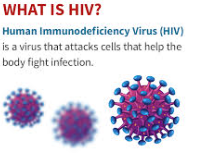

🌸 Ukwezi k'umugore • 🦠 Virusi itera SIDA (HIV)
Ukwiye kumenya ko kujya mu mihango ari kimwe mu bimenyetso bigaragaza ko umukobwa arimo kuva mu kiciro cy’ubwana ajya mu bukuru. Ibi bigaragaza ko umubiri w’umukobwa ukora neza.
Imihango ni amaraso asohoka aturutse muri nyababyeyi agasohokera mu gitsina cy’umukobwa cyangwa umugore bitewe nuko nta sama ryabayeho muri uko kwezi.
Kujya mu mihango bwa mbere bitangira hagati y’imyaka 12 na 14, ariko hari abashobora kubona imihango mbere y’icyo gihe nko ku myaka 9, 10 cyangwa nyuma nko ku myaka 16 bitewe n’imiterere y’umubiri.
Umwangavu asabwa gutinyuka agasobanuzwa ababyeyi, abaganga n’abandi babihuguriwe kugira ngo amenye uko yitwara.
Kujya mu mihango si uburwayi ahubwo ni ibintu bisanzwe bibaho mu buzima, kandi ni kimwe mu bigaragaza ko umukobwa cyangwa umugore afite ubuzima bwiza.
Ni byiza kwirinda guha akato no gusebyana abakobwa na bagore bari mu mihango, tukamenya ko imiterere ya baganzi bacye idakwiriye kuba imbarutso yo kubahutaza ahubwo ariyo gihe gikwiye cyo kubafasha no kubaba hafi, tukabaka umuryango wubahana kandi ushyigikira ihame ry’uburinganire n’ubwuzuzanye muri byose.
Impinduka nyinshi z’umubiri n’amarangamutima zibaho ku mukobwa cyangwa umugore mbere yo kujya mu mihango kandi zigagaragara mu buryo bunyuranye kuri buri muntu.
Ibimenyetso bibanziriza imihango ntabwo ari uburwayi ni ibintu bisanzwe. Ibi biba ikibazo iyo ibimenyetso bigaragaza impinduka zidasanzwe mu mibereho yawe ya buri munsi nko kubabara bikabije, kumva utishimye n’ibindi. Igihe ibyo bimenyetso bihutira kujya kwa muganga kugira ngo ufashwe hakiri kare.
Kuri bwa munda mu gihe cy’imihango ni ibintu bisanzwe ritabwo ari uburwayi ariko igihe ububare butihanganirwa kugeraho bituma udakora inshingano zawe za buri munsi, ihutire kuya kwa muganga bagufashe banakugabanyirize ububabare.
Ni ingenzi ko umenya umubiri wawe, ukamenya uburyo bwagufasha mu kugabanya ububabare bwo mugiye cy’imihango kuko uburyo bumwe bushobora gukora ku muntu umwe ariko ntibukore ku wundi.
Kuribwa mu gihe cy’imihango ntabwo ari uburwayi, gusa niba ubabare bukabije bugatuma utabasha inshingano zawe, ihutire gusaba ubufasha ku ivuriro rikwegereye kuko wabishobora neza.
Umukobwa cyangwa umugore aba afite amahirwe menshi yo gusama kurenza ibindi bihe, iyo ari mu gihe cy’uburumbuke.
Uburumbuke k’umukobwa cyangwa umugore ni igihe cy’ishisha n’irekurwa ry’intangangore(igi) riva mu mirerantanga rijya mu miyoborantanga, akaba ari icyo gihe mu kwezi k’umugore/umukobwa aba afite amahirwe menshi yo gusama aramutse akoze imibonano mpuzabitsina idakingiye.
Gusama kubaho iyo umukobwa/umugore akoranye imibonano mpuzabitsina idakingiye n’umugabo cyangwa umusore, intanga ngore igahura n’intanga ngabo bigakora urusoro, arirwo rukura rukavamo umwana.
Kureka kw’igi ni kimwe mu bice bisanzwe bigize uburumbuke, muri iki gihe kamwe mu dusabo tw’intanga ngore (ak’iburyo cyangwa ibumoso) kareka igi (intangangore), ikajya mu miyobora ntanga aho ritegereza intanga ngabo.
Abakobwa cyangwa abagore bose baba abafite ukwezi guhindagurika ndetse n’ukudahindagurika, mu kwezi kwabo bagira igice kidahinduka kigizwe n’iminsi 14. Iki gice kibarwa duhereye inyuma, aho kiva k’umunsi wa nyuma w’ukwezi k’umugore kikagera k’umunsi wa mbere imbere mu ry’umukobwa/umugore ryarekuriwemo.
Uburumbuke ni igihe umukobwa aba afite amahirwe menshi yo gusama. N’ubwo iyo ntangangore nyuma yo kurekurwa n’agasabo k’intanga ishobora kumara amasaha 24 ikiri nzima itegereje mu miyobora ntanga, igihe uburumbuke bumara kirekire aya masha 24 kuko gusama bigirwamo uruhare n’intanga ngore ndetse n’intanga ngabo. Igihe uburumbuke bumara kigenwa n’ubwoko bw’ukwezi k’umugore.
Ni ngombwa kumenya ko mu kwezi k’umugore nta gihe nakiwe umuntu aba atasama bitewe n’imikorere ndetse n’imibonano mpuzabitsina y’umubiri.
N’ubwo gusama biberamo myanya myinshi y’umubiri, gusa biba byagizemwo uruhare n’intanga ngore ndetse n’intangangabo, akaba ariyo mpamvu iminsi y’uburumbuke iba ari myinshi ugereranyije n’igihe intangangore (igi) imara irekuwe itegerereje mu miyoborantanga.
Virusi itera SIDA (VIH) iracyari ikibazo gikomeye ku rwego rw’isi mu by’ubuzima rusange, cyane cyane mu rubyiruko. Kubura amakuru ahagije n’imyitwarire ishobora gushyira umuntu mu kaga bituma urubyiruko rwibasirwa cyane.Uru rubuga rugamije gutanga ubumenyi busobanutse kuri VIH, uburyo yandura, ingaruka zayo ndetse n’ingamba zo kuyirinda, hagamijwe guteza imbere imibereho myiza y’urubyiruko.
VIH ni virusi yibasira uturemangingo turinda umubiri (CD4), igatuma ubudahangarwa bugabanuka. Iyo itavuwe ishobora gutera SIDA.
Icyitonderwa: VIH ntayandurira mu gusuhuzanya cyangwa gusangira amafunguro.
VIH iririndwa kandi uburezi ni ingenzi mu kuyikumira.Urubyiruko rugirwa inama yo kwirinda icyo aricyo cyose cyarushora mu mibonano mpuzabitsina imburagihe.Ndetse no kwirinda igitutu cy'urungano n'ikigare bibashora mu myanzuro batatekerejeho.
You should know that having your period is one of the signs that a girl is leaving childhood and entering adulthood. This shows that the girl’s body is functioning well.
Menstruation is blood that comes from the uterus and exits through the vagina of a girl or woman because no fertilization occurred that month.
The first period usually starts between the ages of 12 and 14, but some may start as early as 9 or 10, or as late as 16, depending on the body.
A young person should feel free to ask parents, doctors or trained people so they know how to behave.
Menstruation is not a disease but a normal part of life, and it is one of the signs that a girl or woman has good health.
It is good to avoid stigmatizing and insulting girls and women who are menstruating. We should know that the natural changes in a few friends should not be a reason to harass them, but rather the right time to support them and stay close to them. Let us build a respectful family that supports the principle of equality and complementarity in everything.
Many physical and emotional changes occur in a girl or woman before menstruation and they appear differently in every person.
Premenstrual symptoms are not a disease; they are normal. They become a problem when the symptoms show unusual changes in your daily life such as severe pain or feeling unhappy. If these symptoms become intense, see a doctor early for help.
Abdominal pain during menstruation is normal and is not a disease, but when the pain is unbearable and prevents you from doing your daily duties, hurry to the doctor so they can help you and reduce the pain.
It is important to know your body and know what works for you to reduce menstrual pain because one method may work for one person but not for another.
Menstrual pain is not a disease, but if the pain is too severe and prevents you from doing your duties, hurry to ask for help at the nearest health centre because you can be helped.
A girl or woman has the highest chance of getting pregnant compared to other times when she is in the ovulation period.
Ovulation in a girl or woman is the time when the egg is released from the ovaries into the fallopian tubes. This is the time in a woman’s or girl’s monthly cycle when she has the highest chance of getting pregnant if she has unprotected sex.
Pregnancy occurs when a girl or woman has unprotected sex with a man or boy, the egg meets the sperm and they form a fertilized egg, which develops into a baby.
The release of the egg is one of the normal parts of ovulation. In this time, one of the small sacs in the ovary (right or left) releases the egg, which travels into the fallopian tube where it waits for the sperm.
All girls or women who have regular or irregular periods have a fixed 14-day phase in their cycle. This phase is counted backwards from the last day of the woman’s period to the first day before the egg is released.
Ovulation is the time when a girl has the highest chance of getting pregnant. Although the egg can survive for up to 24 hours after being released, the ovulation window is longer (about 24 hours) because pregnancy also depends on both the egg and the sperm. The length of the ovulation period depends on the type of menstrual cycle.
It is important to know that in a woman’s monthly cycle there is no time when a person cannot get pregnant because of the way the body and sexual intercourse work.
Although pregnancy can happen in many parts of the body, it mainly involves the egg and the sperm, which is why the ovulation days are more than the time the egg stays waiting in the fallopian tube.
The HIV virus that causes AIDS is still a serious global health problem, especially among young people. Lack of enough information and risky behaviours put young people at high risk. This platform aims to provide clear knowledge about HIV, how it is transmitted, its effects and ways to prevent it, with the goal of improving the well-being of young people.
HIV is a virus that attacks the immune cells (CD4) that protect the body, causing the immune system to weaken. If not treated, it can lead to AIDS.
Note: HIV is not transmitted through shaking hands or sharing food.
HIV can be prevented and education is very important in stopping it. Young people are advised to avoid anything that could lead them into unprotected sex early. They should also avoid peer pressure and bad groups that can lead them to decisions they have not thought about.
Menstrual Cycle Calculator – Track your cycle, fertile window & ovulation